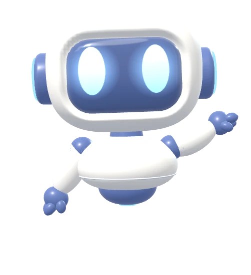
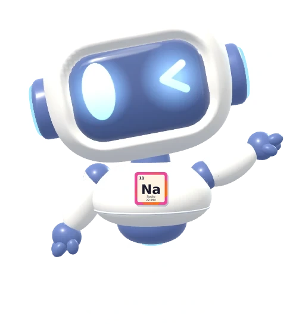
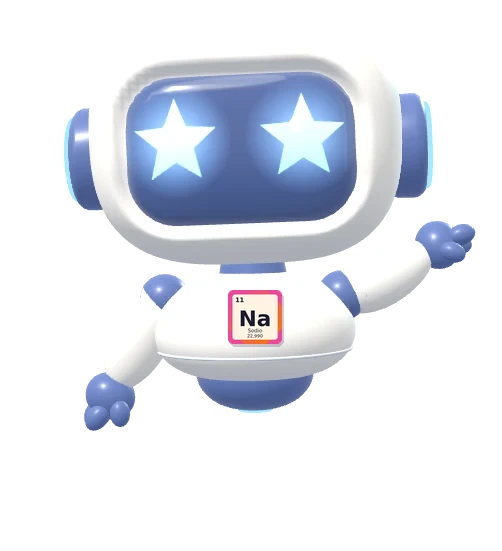

2Apareces afuera, frente a las puertas del colegio. Acércate y ábrelas para entrar. Puedes subir escaleras, cruzar el puente y entrar a todas las aulas.
PC: usa las flechas ◀ ▶ del teclado para ir de un lugar a otro
Celular: toca la derecha de la pantalla para avanzar y la izquierda para regresar